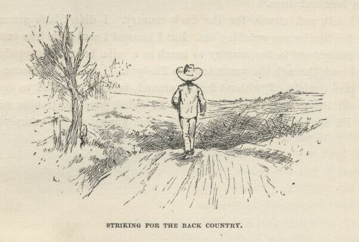
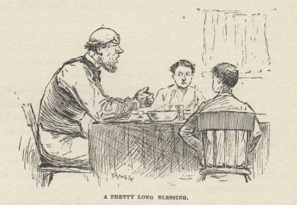
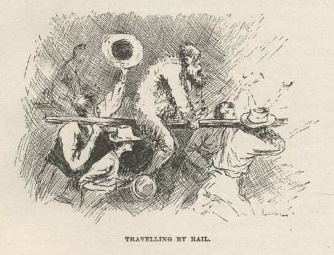
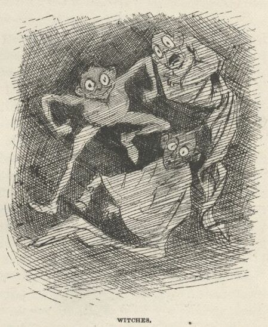

Adventures of Huckleberry Finn

So I left, and struck for the back country. I didn't look around, but I kinder felt
like he was watching me. But I knowed I could tire him out at that. I went straight
out in the country as much as a mile before I stopped; then I doubled back through
the woods towards Phelps'. I reckoned I better start in on my plan straight off without
fooling around, because I wanted to stop Jim's mouth till these fellows could get
away. I didn't want no trouble with their kind. I'd seen all I wanted to of them,
and wanted to get entirely shut of them.
CHAPTER XXXII.
WHEN I got there it was all still and Sunday-like, and hot and sunshiny; the hands
was gone to the fields; and there was them kind of faint dronings of bugs and flies
in the air that makes it seem so lonesome and like everybody's dead and gone; and
if a breeze fans along and quivers the leaves it makes you feel mournful, because
you feel like it's spirits whispering—spirits that's been dead ever so many years—and
you always think they're talking about you. As a general thing it makes a body wish he was dead, too, and done with it all.
Phelps' was one of these little one-horse cotton plantations, and they all look alike.
A rail fence round a two-acre yard; a stile made out of logs sawed off and up-ended
in steps, like barrels of a different length, to climb over the fence with, and for
the women to stand on when they are going to jump on to a horse; some sickly grass-patches
in the big yard, but mostly it was bare and smooth, like an old hat with the nap rubbed
off; big double log-house for the white folks—hewed logs, with the chinks stopped
up with mud or mortar, and these mud-stripes been whitewashed some time or another;
round-log kitchen, with a big broad, open but roofed passage joining it to the house;
log smoke-house back of the kitchen; three little log nigger-cabins in a row t'other
side the smoke-house; one little hut all by itself away down against the back fence,
and some outbuildings down a piece the other side; ash-hopper and big kettle to bile
soap in by the little hut; bench by the kitchen door, with bucket of water and a gourd;
hound asleep there in the sun; more hounds asleep round about; about three shade trees
away off in a corner; some currant bushes and gooseberry bushes in one place by the
fence; outside of the fence a garden and a watermelon patch; then the cotton fields
begins, and after the fields the woods.
I went around and clumb over the back stile by the ash-hopper, and started for the
kitchen. When I got a little ways I heard the dim hum of a spinning-wheel wailing
along up and sinking along down again; and then I knowed for certain I wished I was
dead—for that is the lonesomest sound in the whole world.
I went right along, not fixing up any particular plan, but just trusting to Providence
to put the right words in my mouth when the time come; for I'd noticed that Providence
always did put the right words in my mouth if I left it alone.
When I got half-way, first one hound and then another got up and went for me, and
of course I stopped and faced them, and kept still. And such another powwow as they
made! In a quarter of a minute I was a kind of a hub of a wheel, as you may say—spokes
made out of dogs—circle of fifteen of them packed together around me, with their necks
and noses stretched up towards me, a-barking and howling; and more a-coming; you could
see them sailing over fences and around corners from everywheres.
A nigger woman come tearing out of the kitchen with a rolling-pin in her hand, singing
out, "Begone you Tige! you Spot! begone sah!" and she fetched first one and then another of them a
clip and sent them howling, and then the rest followed; and the next second half of
them come back, wagging their tails around me, and making friends with me. There
ain't no harm in a hound, nohow.
And behind the woman comes a little nigger girl and two little nigger boys without
anything on but tow-linen shirts, and they hung on to their mother's gown, and peeped
out from behind her at me, bashful, the way they always do. And here comes the white
woman running from the house, about forty-five or fifty year old, bareheaded, and
her spinning-stick in her hand; and behind her comes her little white children, acting
the same way the little niggers was doing. She was smiling all over so she could
hardly stand—and says:
"It's you, at last!—ain't it?"
I out with a "Yes'm" before I thought.
She grabbed me and hugged me tight; and then gripped me by both hands and shook and
shook; and the tears come in her eyes, and run down over; and she couldn't seem to
hug and shake enough, and kept saying, "You don't look as much like your mother as
I reckoned you would; but law sakes, I don't care for that, I'm so glad to see you!
Dear, dear, it does seem like I could eat you up! Children, it's your cousin Tom!—tell
him howdy."
But they ducked their heads, and put their fingers in their mouths, and hid behind
her. So she run on:
"Lize, hurry up and get him a hot breakfast right away—or did you get your breakfast
on the boat?"
I said I had got it on the boat. So then she started for the house, leading me by
the hand, and the children tagging after. When we got there she set me down in a
split-bottomed chair, and set herself down on a little low stool in front of me, holding
both of my hands, and says:
"Now I can have a good look at you; and, laws-a-me, I've been hungry for it a many and a many a time, all
these long years, and it's come at last! We been expecting you a couple of days and
more. What kep' you?—boat get aground?"
"Yes'm—she—"
"Don't say yes'm—say Aunt Sally. Where'd she get aground?"
I didn't rightly know what to say, because I didn't know whether the boat would be
coming up the river or down. But I go a good deal on instinct; and my instinct said
she would be coming up—from down towards Orleans. That didn't help me much, though;
for I didn't know the names of bars down that way. I see I'd got to invent a bar,
or forget the name of the one we got aground on—or—Now I struck an idea, and fetched
it out:
"It warn't the grounding—that didn't keep us back but a little. We blowed out a cylinder-head."
"Good gracious! anybody hurt?"
"No'm. Killed a nigger."
"Well, it's lucky; because sometimes people do get hurt. Two years ago last Christmas
your uncle Silas was coming up from Newrleans on the old Lally Rook, and she blowed
out a cylinder-head and crippled a man. And I think he died afterwards. He was a
Baptist. Your uncle Silas knowed a family in Baton Rouge that knowed his people very
well. Yes, I remember now, he did die. Mortification set in, and they had to amputate him. But it didn't save him.
Yes, it was mortification—that was it. He turned blue all over, and died in the
hope of a glorious resurrection. They say he was a sight to look at. Your uncle's
been up to the town every day to fetch you. And he's gone again, not more'n an hour
ago; he'll be back any minute now. You must a met him on the road, didn't you?—oldish
man, with a—"
"No, I didn't see nobody, Aunt Sally. The boat landed just at daylight, and I left
my baggage on the wharf-boat and went looking around the town and out a piece in the
country, to put in the time and not get here too soon; and so I come down the back
way."
"Who'd you give the baggage to?"
"Nobody."
"Why, child, it 'll be stole!"
"Not where I hid it I reckon it won't," I says.
"How'd you get your breakfast so early on the boat?"
It was kinder thin ice, but I says:
"The captain see me standing around, and told me I better have something to eat before
I went ashore; so he took me in the texas to the officers' lunch, and give me all
I wanted."
I was getting so uneasy I couldn't listen good. I had my mind on the children all
the time; I wanted to get them out to one side and pump them a little, and find out
who I was. But I couldn't get no show, Mrs. Phelps kept it up and run on so. Pretty
soon she made the cold chills streak all down my back, because she says:
"But here we're a-running on this way, and you hain't told me a word about Sis, nor
any of them. Now I'll rest my works a little, and you start up yourn; just tell me
everything—tell me all about 'm all every one of 'm; and how they are, and what they're doing,
and what they told you to tell me; and every last thing you can think of."
Well, I see I was up a stump—and up it good. Providence had stood by me this fur
all right, but I was hard and tight aground now. I see it warn't a bit of use to
try to go ahead—I'd got to throw up my hand. So I says to myself, here's another
place where I got to resk the truth. I opened my mouth to begin; but she grabbed
me and hustled me in behind the bed, and says:
"Here he comes! Stick your head down lower—there, that'll do; you can't be seen now.
Don't you let on you're here. I'll play a joke on him. Children, don't you say a
word."
I see I was in a fix now. But it warn't no use to worry; there warn't nothing to
do but just hold still, and try and be ready to stand from under when the lightning
struck.
I had just one little glimpse of the old gentleman when he come in; then the bed hid
him. Mrs. Phelps she jumps for him, and says:
"Has he come?"
"No," says her husband.
"Good-ness gracious!" she says, "what in the warld can have become of him?"
"I can't imagine," says the old gentleman; "and I must say it makes me dreadful uneasy."
"Uneasy!" she says; "I'm ready to go distracted! He must a come; and you've missed him along the road. I know it's so—something tells me so."
"Why, Sally, I couldn't miss him along the road—you know that."
"But oh, dear, dear, what will Sis say! He must a come! You must a missed him. He—"
"Oh, don't distress me any more'n I'm already distressed. I don't know what in the
world to make of it. I'm at my wit's end, and I don't mind acknowledging 't I'm right
down scared. But there's no hope that he's come; for he couldn't come and me miss him. Sally, it's terrible—just terrible—something's happened to
the boat, sure!"
"Why, Silas! Look yonder!—up the road!—ain't that somebody coming?"
He sprung to the window at the head of the bed, and that give Mrs. Phelps the chance
she wanted. She stooped down quick at the foot of the bed and give me a pull, and
out I come; and when he turned back from the window there she stood, a-beaming and
a-smiling like a house afire, and I standing pretty meek and sweaty alongside. The
old gentleman stared, and says:
"Why, who's that?"
"Who do you reckon 't is?"
"I hain't no idea. Who is it?"
"It's Tom Sawyer!"
By jings, I most slumped through the floor! But there warn't no time to swap knives;
the old man grabbed me by the hand and shook, and kept on shaking; and all the time
how the woman did dance around and laugh and cry; and then how they both did fire
off questions about Sid, and Mary, and the rest of the tribe.
But if they was joyful, it warn't nothing to what I was; for it was like being born
again, I was so glad to find out who I was. Well, they froze to me for two hours;
and at last, when my chin was so tired it couldn't hardly go any more, I had told
them more about my family—I mean the Sawyer family—than ever happened to any six Sawyer
families. And I explained all about how we blowed out a cylinder-head at the mouth
of White River, and it took us three days to fix it. Which was all right, and worked
first-rate; because they didn't know but what it would take three days to fix it. If I'd a called it a bolthead
it would a done just as well.
Now I was feeling pretty comfortable all down one side, and pretty uncomfortable all
up the other. Being Tom Sawyer was easy and comfortable, and it stayed easy and comfortable
till by and by I hear a steamboat coughing along down the river. Then I says to myself,
s'pose Tom Sawyer comes down on that boat? And s'pose he steps in here any minute,
and sings out my name before I can throw him a wink to keep quiet?
Well, I couldn't have it that way; it wouldn't do at all. I must go up the road and waylay him. So I
told the folks I reckoned I would go up to the town and fetch down my baggage. The
old gentleman was for going along with me, but I said no, I could drive the horse
myself, and I druther he wouldn't take no trouble about me.
CHAPTER XXXIII.
SO I started for town in the wagon, and when I was half-way I see a wagon coming,
and sure enough it was Tom Sawyer, and I stopped and waited till he come along. I
says "Hold on!" and it stopped alongside, and his mouth opened up like a trunk, and
stayed so; and he swallowed two or three times like a person that's got a dry throat,
and then says:
"I hain't ever done you no harm. You know that. So, then, what you want to come
back and ha'nt me for?"
I says:
"I hain't come back—I hain't been gone."
When he heard my voice it righted him up some, but he warn't quite satisfied yet.
He says:
"Don't you play nothing on me, because I wouldn't on you. Honest injun now, you ain't
a ghost?"
"Honest injun, I ain't," I says.
"Well—I—I—well, that ought to settle it, of course; but I can't somehow seem to understand
it no way. Looky here, warn't you ever murdered at all?"
"No. I warn't ever murdered at all—I played it on them. You come in here and feel
of me if you don't believe me."
So he done it; and it satisfied him; and he was that glad to see me again he didn't
know what to do. And he wanted to know all about it right off, because it was a grand
adventure, and mysterious, and so it hit him where he lived. But I said, leave it
alone till by and by; and told his driver to wait, and we drove off a little piece,
and I told him the kind of a fix I was in, and what did he reckon we better do? He
said, let him alone a minute, and don't disturb him. So he thought and thought, and
pretty soon he says:
"It's all right; I've got it. Take my trunk in your wagon, and let on it's your'n;
and you turn back and fool along slow, so as to get to the house about the time you
ought to; and I'll go towards town a piece, and take a fresh start, and get there
a quarter or a half an hour after you; and you needn't let on to know me at first."
I says:
"All right; but wait a minute. There's one more thing—a thing that nobody don't know but me. And that is, there's a nigger here that I'm a-trying to steal
out of slavery, and his name is Jim—old Miss Watson's Jim."
He says:
"What! Why, Jim is—"
He stopped and went to studying. I says:
"I know what you'll say. You'll say it's dirty, low-down business; but what if it
is? I'm low down; and I'm a-going to steal him, and I want you keep mum and not let
on. Will you?"
His eye lit up, and he says:
"I'll help you steal him!"
Well, I let go all holts then, like I was shot. It was the most astonishing speech
I ever heard—and I'm bound to say Tom Sawyer fell considerable in my estimation. Only
I couldn't believe it. Tom Sawyer a nigger-stealer!
"Oh, shucks!" I says; "you're joking."
"I ain't joking, either."
"Well, then," I says, "joking or no joking, if you hear anything said about a runaway
nigger, don't forget to remember that you don't know nothing about him, and I don't know nothing about him."
Then we took the trunk and put it in my wagon, and he drove off his way and I drove
mine. But of course I forgot all about driving slow on accounts of being glad and
full of thinking; so I got home a heap too quick for that length of a trip. The old
gentleman was at the door, and he says:
"Why, this is wonderful! Whoever would a thought it was in that mare to do it? I
wish we'd a timed her. And she hain't sweated a hair—not a hair. It's wonderful.
Why, I wouldn't take a hundred dollars for that horse now—I wouldn't, honest; and
yet I'd a sold her for fifteen before, and thought 'twas all she was worth."
That's all he said. He was the innocentest, best old soul I ever see. But it warn't
surprising; because he warn't only just a farmer, he was a preacher, too, and had
a little one-horse log church down back of the plantation, which he built it himself
at his own expense, for a church and schoolhouse, and never charged nothing for his
preaching, and it was worth it, too. There was plenty other farmer-preachers like
that, and done the same way, down South.
In about half an hour Tom's wagon drove up to the front stile, and Aunt Sally she
see it through the window, because it was only about fifty yards, and says:
"Why, there's somebody come! I wonder who 'tis? Why, I do believe it's a stranger.
Jimmy" (that's one of the children) "run and tell Lize to put on another plate for
dinner."
Everybody made a rush for the front door, because, of course, a stranger don't come
every year, and so he lays over the yaller-fever, for interest, when he does come. Tom
was over the stile and starting for the house; the wagon was spinning up the road
for the village, and we was all bunched in the front door. Tom had his store clothes
on, and an audience—and that was always nuts for Tom Sawyer. In them circumstances
it warn't no trouble to him to throw in an amount of style that was suitable. He
warn't a boy to meeky along up that yard like a sheep; no, he come ca'm and important,
like the ram. When he got a-front of us he lifts his hat ever so gracious and dainty,
like it was the lid of a box that had butterflies asleep in it and he didn't want
to disturb them, and says:
"Mr. Archibald Nichols, I presume?"
"No, my boy," says the old gentleman, "I'm sorry to say 't your driver has deceived
you; Nichols's place is down a matter of three mile more. Come in, come in."
Tom he took a look back over his shoulder, and says, "Too late—he's out of sight."
"Yes, he's gone, my son, and you must come in and eat your dinner with us; and then
we'll hitch up and take you down to Nichols's."
"Oh, I can't make you so much trouble; I couldn't think of it. I'll walk—I don't mind the distance."
"But we won't let you walk—it wouldn't be Southern hospitality to do it. Come right in."
"Oh, do," says Aunt Sally; "it ain't a bit of trouble to us, not a bit in the world. You
must stay. It's a long, dusty three mile, and we can't let you walk. And, besides,
I've already told 'em to put on another plate when I see you coming; so you mustn't
disappoint us. Come right in and make yourself at home."
So Tom he thanked them very hearty and handsome, and let himself be persuaded, and
come in; and when he was in he said he was a stranger from Hicksville, Ohio, and his
name was William Thompson—and he made another bow.
Well, he run on, and on, and on, making up stuff about Hicksville and everybody in
it he could invent, and I getting a little nervious, and wondering how this was going
to help me out of my scrape; and at last, still talking along, he reached over and
kissed Aunt Sally right on the mouth, and then settled back again in his chair comfortable,
and was going on talking; but she jumped up and wiped it off with the back of her
hand, and says:
"You owdacious puppy!"
He looked kind of hurt, and says:
"I'm surprised at you, m'am."
"You're s'rp—Why, what do you reckon I am? I've a good notion to take and—Say, what
do you mean by kissing me?"
He looked kind of humble, and says:
"I didn't mean nothing, m'am. I didn't mean no harm. I—I—thought you'd like it."
"Why, you born fool!" She took up the spinning stick, and it looked like it was all
she could do to keep from giving him a crack with it. "What made you think I'd like
it?"
"Well, I don't know. Only, they—they—told me you would."
"They told you I would. Whoever told you's another lunatic. I never heard the beat of it. Who's they?"
"Why, everybody. They all said so, m'am."
It was all she could do to hold in; and her eyes snapped, and her fingers worked like
she wanted to scratch him; and she says:
"Who's 'everybody'? Out with their names, or ther'll be an idiot short."
He got up and looked distressed, and fumbled his hat, and says:
"I'm sorry, and I warn't expecting it. They told me to. They all told me to. They
all said, kiss her; and said she'd like it. They all said it—every one of them. But
I'm sorry, m'am, and I won't do it no more—I won't, honest."
"You won't, won't you? Well, I sh'd reckon you won't!"
"No'm, I'm honest about it; I won't ever do it again—till you ask me."
"Till I ask you! Well, I never see the beat of it in my born days! I lay you'll be the Methusalem-numskull
of creation before ever I ask you—or the likes of you."
"Well," he says, "it does surprise me so. I can't make it out, somehow. They said
you would, and I thought you would. But—" He stopped and looked around slow, like
he wished he could run across a friendly eye somewheres, and fetched up on the old
gentleman's, and says, "Didn't you think she'd like me to kiss her, sir?"
"Why, no; I—I—well, no, I b'lieve I didn't."
Then he looks on around the same way to me, and says:
"Tom, didn't you think Aunt Sally 'd open out her arms and say, 'Sid Sawyer—'"
"My land!" she says, breaking in and jumping for him, "you impudent young rascal,
to fool a body so—" and was going to hug him, but he fended her off, and says:
"No, not till you've asked me first."
So she didn't lose no time, but asked him; and hugged him and kissed him over and
over again, and then turned him over to the old man, and he took what was left. And
after they got a little quiet again she says:
"Why, dear me, I never see such a surprise. We warn't looking for you at all, but only Tom. Sis never wrote to me about anybody coming but him."
"It's because it warn't intended for any of us to come but Tom," he says; "but I begged and begged, and at the last
minute she let me come, too; so, coming down the river, me and Tom thought it would
be a first-rate surprise for him to come here to the house first, and for me to by
and by tag along and drop in, and let on to be a stranger. But it was a mistake,
Aunt Sally. This ain't no healthy place for a stranger to come."
"No—not impudent whelps, Sid. You ought to had your jaws boxed; I hain't been so
put out since I don't know when. But I don't care, I don't mind the terms—I'd be
willing to stand a thousand such jokes to have you here. Well, to think of that performance!
I don't deny it, I was most putrified with astonishment when you give me that smack."

We had dinner out in that broad open passage betwixt the house and the kitchen; and
there was things enough on that table for seven families—and all hot, too; none of
your flabby, tough meat that's laid in a cupboard in a damp cellar all night and tastes
like a hunk of old cold cannibal in the morning. Uncle Silas he asked a pretty long
blessing over it, but it was worth it; and it didn't cool it a bit, neither, the way
I've seen them kind of interruptions do lots of times. There was a considerable good
deal of talk all the afternoon, and me and Tom was on the lookout all the time; but
it warn't no use, they didn't happen to say nothing about any runaway nigger, and
we was afraid to try to work up to it. But at supper, at night, one of the little
boys says:
"Pa, mayn't Tom and Sid and me go to the show?"
"No," says the old man, "I reckon there ain't going to be any; and you couldn't go
if there was; because the runaway nigger told Burton and me all about that scandalous
show, and Burton said he would tell the people; so I reckon they've drove the owdacious
loafers out of town before this time."
So there it was!—but I couldn't help it. Tom and me was to sleep in the same room
and bed; so, being tired, we bid good-night and went up to bed right after supper,
and clumb out of the window and down the lightning-rod, and shoved for the town; for
I didn't believe anybody was going to give the king and the duke a hint, and so if
I didn't hurry up and give them one they'd get into trouble sure.
On the road Tom he told me all about how it was reckoned I was murdered, and how pap
disappeared pretty soon, and didn't come back no more, and what a stir there was when
Jim run away; and I told Tom all about our Royal Nonesuch rapscallions, and as much
of the raft voyage as I had time to; and as we struck into the town and up through
the the middle of it--it was as much as half-after eight, then—here comes a raging
rush of people with torches, and an awful whooping and yelling, and banging tin pans
and blowing horns; and we jumped to one side to let them go by; and as they went by
I see they had the king and the duke astraddle of a rail—that is, I knowed it was the king and the duke, though they was all over tar and feathers, and didn't look
like nothing in the world that was human—just looked like a couple of monstrous big
soldier-plumes. Well, it made me sick to see it; and I was sorry for them poor pitiful
rascals, it seemed like I couldn't ever feel any hardness against them any more in
the world. It was a dreadful thing to see. Human beings can be awful cruel to one another.

We see we was too late—couldn't do no good. We asked some stragglers about it, and
they said everybody went to the show looking very innocent; and laid low and kept
dark till the poor old king was in the middle of his cavortings on the stage; then
somebody give a signal, and the house rose up and went for them.
So we poked along back home, and I warn't feeling so brash as I was before, but kind
of ornery, and humble, and to blame, somehow—though I hadn't done nothing. But that's
always the way; it don't make no difference whether you do right or wrong, a person's
conscience ain't got no sense, and just goes for him anyway. If I had a yaller dog
that didn't know no more than a person's conscience does I would pison him. It takes
up more room than all the rest of a person's insides, and yet ain't no good, nohow.
Tom Sawyer he says the same.
CHAPTER XXXIV.
WE stopped talking, and got to thinking. By and by Tom says:
"Looky here, Huck, what fools we are to not think of it before! I bet I know where
Jim is."
"No! Where?"
"In that hut down by the ash-hopper. Why, looky here. When we was at dinner, didn't
you see a nigger man go in there with some vittles?"
"Yes."
"What did you think the vittles was for?"
"For a dog."
"So 'd I. Well, it wasn't for a dog."
"Why?"
"Because part of it was watermelon."
"So it was—I noticed it. Well, it does beat all that I never thought about a dog
not eating watermelon. It shows how a body can see and don't see at the same time."
"Well, the nigger unlocked the padlock when he went in, and he locked it again when
he came out. He fetched uncle a key about the time we got up from table—same key,
I bet. Watermelon shows man, lock shows prisoner; and it ain't likely there's two
prisoners on such a little plantation, and where the people's all so kind and good.
Jim's the prisoner. All right—I'm glad we found it out detective fashion; I wouldn't
give shucks for any other way. Now you work your mind, and study out a plan to steal
Jim, and I will study out one, too; and we'll take the one we like the best."
What a head for just a boy to have! If I had Tom Sawyer's head I wouldn't trade it
off to be a duke, nor mate of a steamboat, nor clown in a circus, nor nothing I can
think of. I went to thinking out a plan, but only just to be doing something; I knowed
very well where the right plan was going to come from. Pretty soon Tom says:
"Ready?"
"Yes," I says.
"All right—bring it out."
"My plan is this," I says. "We can easy find out if it's Jim in there. Then get up
my canoe to-morrow night, and fetch my raft over from the island. Then the first
dark night that comes steal the key out of the old man's britches after he goes to
bed, and shove off down the river on the raft with Jim, hiding daytimes and running
nights, the way me and Jim used to do before. Wouldn't that plan work?"
"Work? Why, cert'nly it would work, like rats a-fighting. But it's too blame' simple;
there ain't nothing to it. What's the good of a plan that ain't no more trouble than that? It's as mild
as goose-milk. Why, Huck, it wouldn't make no more talk than breaking into a soap
factory."
I never said nothing, because I warn't expecting nothing different; but I knowed mighty
well that whenever he got his plan ready it wouldn't have none of them objections to it.
And it didn't. He told me what it was, and I see in a minute it was worth fifteen
of mine for style, and would make Jim just as free a man as mine would, and maybe
get us all killed besides. So I was satisfied, and said we would waltz in on it.
I needn't tell what it was here, because I knowed it wouldn't stay the way, it was.
I knowed he would be changing it around every which way as we went along, and heaving
in new bullinesses wherever he got a chance. And that is what he done.
Well, one thing was dead sure, and that was that Tom Sawyer was in earnest, and was
actuly going to help steal that nigger out of slavery. That was the thing that was
too many for me. Here was a boy that was respectable and well brung up; and had a
character to lose; and folks at home that had characters; and he was bright and not
leather-headed; and knowing and not ignorant; and not mean, but kind; and yet here
he was, without any more pride, or rightness, or feeling, than to stoop to this business,
and make himself a shame, and his family a shame, before everybody. I couldn't understand it no way at all. It was outrageous, and I knowed I ought to just up
and tell him so; and so be his true friend, and let him quit the thing right where
he was and save himself. And I did start to tell him; but he shut me up, and says:
"Don't you reckon I know what I'm about? Don't I generly know what I'm about?"
"Yes."
"Didn't I say I was going to help steal the nigger?"
"Yes."
"Well, then."
That's all he said, and that's all I said. It warn't no use to say any more; because
when he said he'd do a thing, he always done it. But I couldn't make out how he was
willing to go into this thing; so I just let it go, and never bothered no more about
it. If he was bound to have it so, I couldn't help it.
When we got home the house was all dark and still; so we went on down to the hut by
the ash-hopper for to examine it. We went through the yard so as to see what the
hounds would do. They knowed us, and didn't make no more noise than country dogs
is always doing when anything comes by in the night. When we got to the cabin we
took a look at the front and the two sides; and on the side I warn't acquainted with—which
was the north side—we found a square window-hole, up tolerable high, with just one
stout board nailed across it. I says:
"Here's the ticket. This hole's big enough for Jim to get through if we wrench off
the board."
Tom says:
"It's as simple as tit-tat-toe, three-in-a-row, and as easy as playing hooky. I should
hope we can find a way that's a little more complicated than that, Huck Finn."

"Well, then," I says, "how 'll it do to saw him out, the way I done before I was murdered
that time?"
"That's more like," he says. "It's real mysterious, and troublesome, and good," he says; "but I bet
we can find a way that's twice as long. There ain't no hurry; le's keep on looking
around."
Betwixt the hut and the fence, on the back side, was a lean-to that joined the hut
at the eaves, and was made out of plank. It was as long as the hut, but narrow—only
about six foot wide. The door to it was at the south end, and was padlocked. Tom
he went to the soap-kettle and searched around, and fetched back the iron thing they
lift the lid with; so he took it and prized out one of the staples. The chain fell
down, and we opened the door and went in, and shut it, and struck a match, and see
the shed was only built against a cabin and hadn't no connection with it; and there
warn't no floor to the shed, nor nothing in it but some old rusty played-out hoes
and spades and picks and a crippled plow. The match went out, and so did we, and
shoved in the staple again, and the door was locked as good as ever. Tom was joyful.
He says;
"Now we're all right. We'll dig him out. It 'll take about a week!"
Then we started for the house, and I went in the back door—you only have to pull a
buckskin latch-string, they don't fasten the doors—but that warn't romantical enough
for Tom Sawyer; no way would do him but he must climb up the lightning-rod. But after
he got up half way about three times, and missed fire and fell every time, and the
last time most busted his brains out, he thought he'd got to give it up; but after
he was rested he allowed he would give her one more turn for luck, and this time he
made the trip.
In the morning we was up at break of day, and down to the nigger cabins to pet the
dogs and make friends with the nigger that fed Jim—if it was Jim that was being fed. The niggers was just getting through breakfast and starting
for the fields; and Jim's nigger was piling up a tin pan with bread and meat and things;
and whilst the others was leaving, the key come from the house.
This nigger had a good-natured, chuckle-headed face, and his wool was all tied up
in little bunches with thread. That was to keep witches off. He said the witches
was pestering him awful these nights, and making him see all kinds of strange things,
and hear all kinds of strange words and noises, and he didn't believe he was ever
witched so long before in his life. He got so worked up, and got to running on so
about his troubles, he forgot all about what he'd been a-going to do. So Tom says:
"What's the vittles for? Going to feed the dogs?"
The nigger kind of smiled around gradually over his face, like when you heave a brickbat
in a mud-puddle, and he says:
"Yes, Mars Sid, A dog. Cur'us dog, too. Does you want to go en look at 'im?"
"Yes."
I hunched Tom, and whispers:
"You going, right here in the daybreak? that warn't the plan."
"No, it warn't; but it's the plan now."
So, drat him, we went along, but I didn't like it much. When we got in we couldn't
hardly see anything, it was so dark; but Jim was there, sure enough, and could see
us; and he sings out:
"Why, Huck! En good lan'! ain' dat Misto Tom?"
I just knowed how it would be; I just expected it. I didn't know nothing to do; and
if I had I couldn't a done it, because that nigger busted in and says:
"Why, de gracious sakes! do he know you genlmen?"
We could see pretty well now. Tom he looked at the nigger, steady and kind of wondering,
and says:
"Does who know us?"
"Why, dis-yer runaway nigger."
"I don't reckon he does; but what put that into your head?"
"What put it dar? Didn' he jis' dis minute sing out like he knowed you?"
Tom says, in a puzzled-up kind of way:
"Well, that's mighty curious. Who sung out? when did he sing out? what did he sing out?" And turns to me, perfectly ca'm, and says, "Did you hear anybody sing out?"
Of course there warn't nothing to be said but the one thing; so I says:
"No; I ain't heard nobody say nothing."
Then he turns to Jim, and looks him over like he never see him before, and says:
"Did you sing out?"
"No, sah," says Jim; "I hain't said nothing, sah."
"Not a word?"
"No, sah, I hain't said a word."
"Did you ever see us before?"
"No, sah; not as I knows on."
So Tom turns to the nigger, which was looking wild and distressed, and says, kind
of severe:
"What do you reckon's the matter with you, anyway? What made you think somebody sung
out?"
"Oh, it's de dad-blame' witches, sah, en I wisht I was dead, I do. Dey's awluz at
it, sah, en dey do mos' kill me, dey sk'yers me so. Please to don't tell nobody 'bout
it sah, er ole Mars Silas he'll scole me; 'kase he say dey ain't no witches. I jis' wish to goodness he was heah now—den what would he say! I jis' bet he couldn' fine no way to git aroun' it dis time. But it's awluz jis' so; people dat's sot, stays sot; dey won't look into noth'n'en fine it out f'r deyselves, en when you fine it out en tell um 'bout it, dey doan' b'lieve you."

Tom give him a dime, and said we wouldn't tell nobody; and told him to buy some more
thread to tie up his wool with; and then looks at Jim, and says:
"I wonder if Uncle Silas is going to hang this nigger. If I was to catch a nigger
that was ungrateful enough to run away, I wouldn't give him up, I'd hang him." And
whilst the nigger stepped to the door to look at the dime and bite it to see if it
was good, he whispers to Jim and says:
"Don't ever let on to know us. And if you hear any digging going on nights, it's
us; we're going to set you free."
Jim only had time to grab us by the hand and squeeze it; then the nigger come back,
and we said we'd come again some time if the nigger wanted us to; and he said he would,
more particular if it was dark, because the witches went for him mostly in the dark,
and it was good to have folks around then.